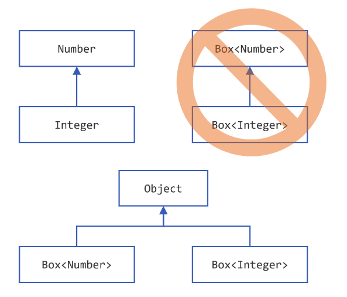
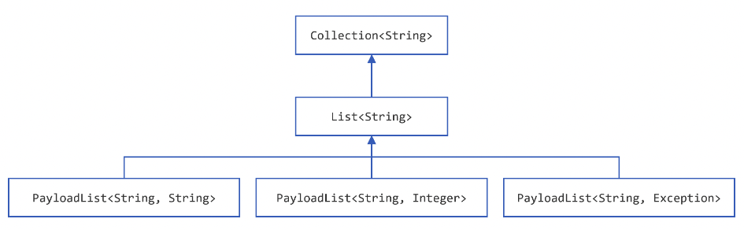
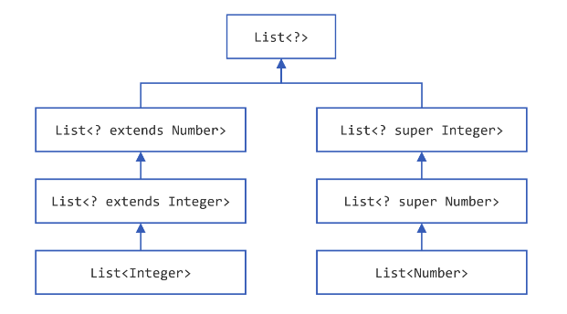
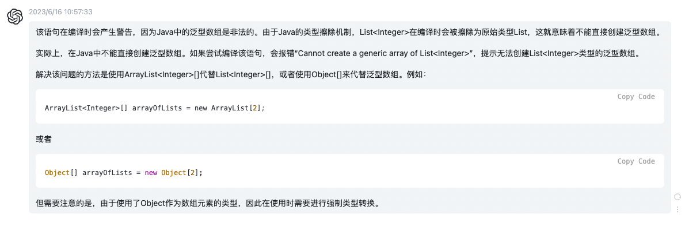

【官方】Java官方笔记8泛型¶

泛型¶
为什么需要泛型？generics enable types (classes and interfaces) to be parameters when defining classes, interfaces and methods.
说白了就像Python动态语言的变量，是动态的，可以指向任意类型。
泛型有个好处是不需要类型转换：
List list = new ArrayList();
list.add("hello");
String s = (String) list.get(0);
List<String> list = new ArrayList<String>();
list.add("hello");
String s = list.get(0); // no cast
这个例子的泛型，是指List的实现使用了泛型<T>，从而给使用带来了好处。
定义
class name<T1, T2, ..., Tn> { /* ... */ }
比如定义class List<T>，使用List<String>
将以下代码：
public class Box {
private Object object;
public void set(Object object) { this.object = object; }
public Object get() { return object; }
}
改为泛型实现：
/**
* Generic version of the Box class.
* @param <T> the type of the value being boxed
*/
public class Box<T> {
// T stands for "Type"
private T t;
public void set(T t) { this.t = t; }
public T get() { return t; }
}
T必须是非基本数据类型：any class type, any interface type, any array type, or even another type variable
type parameter命名采用单个大写字母：
E - Element (used extensively by the Java Collections Framework)
K - Key
N - Number
T - Type
V - Value
S, U, V etc. - 2nd, 3rd, 4th types
这样能很好的跟其他命名区分开来。
使用泛型，必须要指定具体的值，比如这里的Integer：
Box<Integer> integerBox;
这就跟方法调用传参是一个道理。
Diamond，将：
Box<Integer> integerBox = new Box<Integer>();
简写为：
Box<Integer> integerBox = new Box<>();
多个type parameters：
public interface Pair<K, V> {
public K getKey();
public V getValue();
}
public class OrderedPair<K, V> implements Pair<K, V> {
private K key;
private V value;
public OrderedPair(K key, V value) {
this.key = key;
this.value = value;
}
public K getKey() { return key; }
public V getValue() { return value; }
}
Pair<String, Integer> p1 = new OrderedPair<String, Integer>("Even", 8); // 这里的int类型8，自动装箱为了I
Pair<String, String> p2 = new OrderedPair<String, String>("hello", "world");
简写为diamond：
OrderedPair<String, Integer> p1 = new OrderedPair<>("Even", 8);
OrderedPair<String, String> p2 = new OrderedPair<>("hello", "world");
嵌套：
OrderedPair<String, Box<Integer>> p = new OrderedPair<>("primes", new Box<Integer>(...));
Raw Types
A raw type is the name of a generic class or interface without any type arguments.
比如：
public class Box<T> {
public void set(T t) { /* ... */ }
// ...
}
Box<Integer> intBox = new Box<>();
Box rawBox = new Box(); // 这个就是rawType
在IDEA有时候会碰到警告Raw use of parameterized class ‘List’，就是指的这个玩意。这是老式写法，raw types会绕过泛型的type checks，应该避免使用。
Generic Methods
定义，泛型位置在return type的前面：
public class Util {
public static <K, V> boolean compare(Pair<K, V> p1, Pair<K, V> p2) {
return p1.getKey().equals(p2.getKey()) &&
p1.getValue().equals(p2.getValue());
}
}
public class Pair<K, V> {
private K key;
private V value;
public Pair(K key, V value) {
this.key = key;
this.value = value;
}
public void setKey(K key) { this.key = key; }
public void setValue(V value) { this.value = value; }
public K getKey() { return key; }
public V getValue() { return value; }
}
使用：
Pair<Integer, String> p1 = new Pair<>(1, "apple");
Pair<Integer, String> p2 = new Pair<>(2, "pear");
boolean same = Util.<Integer, String>compare(p1, p2);
调用泛型方法时也可以省略泛型入参：
Pair<Integer, String> p1 = new Pair<>(1, "apple");
Pair<Integer, String> p2 = new Pair<>(2, "pear");
boolean same = Util.compare(p1, p2); // 这里省略了泛型入参
Bounded Type Parameters
有点像Python的typing，限制动态变量的类型，使用extends关键字：
public class Box<T> {
private T t;
public void set(T t) {
this.t = t;
}
public T get() {
return t;
}
public <U extends Number> void inspect(U u){
System.out.println("T: " + t.getClass().getName());
System.out.println("U: " + u.getClass().getName());
}
public static void main(String[] args) {
Box<Integer> integerBox = new Box<Integer>();
integerBox.set(new Integer(10));
integerBox.inspect("some text"); // error: this is still String!
}
}
这样还能进一步调用bounded type parameters的方法：
public class NaturalNumber<T extends Integer> {
private T n;
public NaturalNumber(T n) { this.n = n; }
public boolean isEven() {
return n.intValue() % 2 == 0; // intValue()是Integer的方法
}
// ...
}
Multiple Bounds
Class A { /* ... */ }
interface B { /* ... */ }
interface C { /* ... */ }
class D <T extends A & B & C> { /* ... */ }
class的位置必须在interface前面。
Bounded Type Parameters的用途之一，比如：
public static <T> int countGreaterThan(T[] anArray, T elem) {
int count = 0;
for (T e : anArray)
if (e > elem) // compiler error
++count;
return count;
}
会编译报错，因为>符号只适用基本数据类型，如果想支持Object，怎么办呢：
public static <T extends Comparable<T>> int countGreaterThan(T[] anArray, T elem) {
int count = 0;
for (T e : anArray)
if (e.compareTo(elem) > 0)
++count;
return count;
}
extends Comparable<T>以后调用compareTo()方法，就能既支持基本数据类型又能支持Object了。
泛型在继承时有个注意的点： Box<Integer> and Box<Double> are
not subtypes of Box<Number>

正确的方式：
You can subtype a generic class or interface by extending or implementing it.
interface PayloadList<E,P> extends List<E> {
void setPayload(int index, P val);
...
}

Type Inference¶
类型推断：Type inference is a Java compiler’s ability to look at each method invocation and corresponding declaration to determine the type argument (or arguments) that make the invocation applicable.（换个理解方式，就是动态变量需要知道绑定哪个类型）
Diamond就是一种Type Inference：
Map<String, List<String>> myMap = new HashMap<>();
在构造方法中进行推断：
class MyClass<X> {
<T> MyClass(T t) {
// ...
}
}
MyClass<Integer> myObject = new MyClass<>("");
X推断为Integer，T推断为String。
Lambda Expressions也会根据上下文推断target type：
public static void printPersons(List<Person> roster, CheckPerson tester)
public void printPersonsWithPredicate(List<Person> roster, Predicate<Person> tester)
printPersons(
people,
p -> p.getGender() == Person.Sex.MALE
&& p.getAge() >= 18
&& p.getAge() <= 25); // 自动推断为CheckPerson
printPersonsWithPredicate(
people,
p -> p.getGender() == Person.Sex.MALE
&& p.getAge() >= 18
&& p.getAge() <= 25);) // 自动推断Predicate<Person>
Variable declarations
Assignments
Return statements
Array initializers
Method or constructor arguments
Lambda expression bodies
Conditional expressions,
?:Cast expressions
再看个例子：
public interface Runnable {
void run();
}
public interface Callable<V> {
V call();
}
void invoke(Runnable r) {
r.run();
}
<T> T invoke(Callable<T> c) {
return c.call();
}
String s = invoke(() -> "done"); // Lambda
实际推断使用哪个？答案是Callable，因为它有return，而Runnable没有。
Wildcards¶
使用?，extends表示上限:
List<? extends Number>
可以是 List<Integer>, List<Double>, and List<Number>
这里的extends既是class的extends，也是interface的implements。
List<Object>和List<?>有什么区别？
①子类型
public static void printList(List<Object> list) {
for (Object elem : list)
System.out.println(elem + " ");
System.out.println();
}
it prints only a list
of `Object <https://docs.oracle.com/en/java/javase/20/docs/api/java.base/java/lang/Object.html>`__ instances;
it cannot print List<Integer>, List<String>, List<Double>,
and so on, because they are not subtypes of List<Object>.
public static void printList(List<?> list) {
for (Object elem: list)
System.out.print(elem + " ");
System.out.println();
}
Because for any concrete type A, List<A> is a subtype
of List<?>, you can use printList() to print a list of any type.
②值
You can insert
an `Object <https://docs.oracle.com/en/java/javase/20/docs/api/java.base/java/lang/Object.html>`__,
or any subtype
of `Object <https://docs.oracle.com/en/java/javase/20/docs/api/java.base/java/lang/Object.html>`__,
into a List<Object>. But you can only insert null into
a List<?>.
使用?，super表示下限:
public static void addNumbers(List<? super Integer> list) {
for (int i = 1; i <= 10; i++) {
list.add(i);
}
}
可以是List<Integer>, List<Number>, and List<Object> —
anything that can
hold `Integer <https://docs.oracle.com/en/java/javase/20/docs/api/java.base/java/lang/Integer.html>`__ values
?能支持集合子类型：

Type Erasure¶
Type Erasure是Java编译器为了实现泛型做的：
Replace all type parameters in generic types with their bounds or Object if the type parameters are unbounded. The produced bytecode, therefore, contains only ordinary classes, interfaces, and methods.
Insert type casts if necessary to preserve type safety.
Generate bridge methods to preserve polymorphism in extended generic types.
Restriction on Generics¶
1、不能使用基本数据类型：
class Pair<K, V> {
private K key;
private V value;
public Pair(K key, V value) {
this.key = key;
this.value = value;
}
// ...
}
Pair<int, char> p = new Pair<>(8, 'a'); // compile-time error
只能使用包装类：
Pair<Integer, Character> p = new Pair<>(8, 'a');
2、不能创建泛型实例：
public static <E> void append(List<E> list) {
E elem = new E(); // compile-time error
list.add(elem);
}
只能通过类来创建实例：
public static <E> void append(List<E> list, Class<E> cls) throws Exception {
E elem = cls.newInstance(); // OK
list.add(elem);
}
List<String> ls = new ArrayList<>();
append(ls, String.class);
3、static不能使用泛型
public class MobileDevice<T> {
private static T os; // 在实例化后，会同时代表3种类型，显然不合理
// ...
}
MobileDevice<Smartphone> phone = new MobileDevice<>();
MobileDevice<Pager> pager = new MobileDevice<>();
MobileDevice<TabletPC> pc = new MobileDevice<>();
4、不能instanceof
public static <E> void rtti(List<E> list) {
if (list instanceof ArrayList<Integer>) { // compile-time error
// ...
}
}
使用?可以：
public static void rtti(List<?> list) {
if (list instanceof ArrayList<?>) { // OK; instanceof requires a reifiable type
// ...
}
}
5、不能创建泛型数组：
List<Integer>[] arrayOfLists = new List<Integer>[2]; // compile-time error

6、Cannot Create, Catch, or Throw Objects of Parameterized Types
// Extends Throwable indirectly
class MathException<T> extends Exception { /* ... */ } // compile-time error
// Extends Throwable directly
class QueueFullException<T> extends Throwable { /* ... */ // compile-time error
public static <T extends Exception, J> void execute(List<J> jobs) {
try {
for (J job : jobs)
// ...
} catch (T e) { // compile-time error
// ...
}
}
throws可以：
class Parser<T extends Exception> {
public void parse(File file) throws T { // OK
// ...
}
}
7、重载方法不能有擦除后相同的泛型：
public class Example {
public void print(Set<String> strSet) { }
public void print(Set<Integer> intSet) { } // 编译错误
}
参考资料：
Generics https://dev.java/learn/generics/